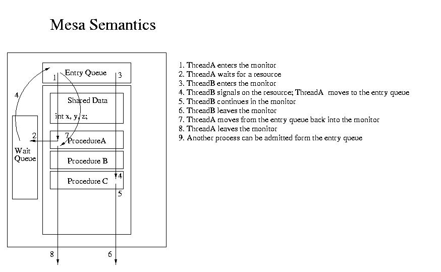
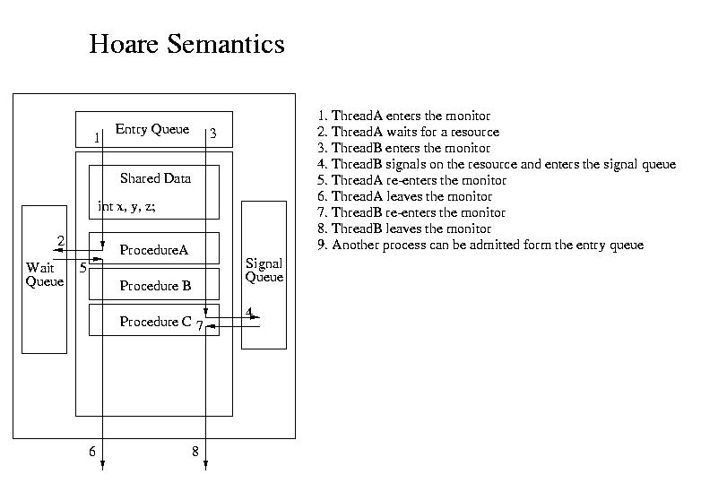
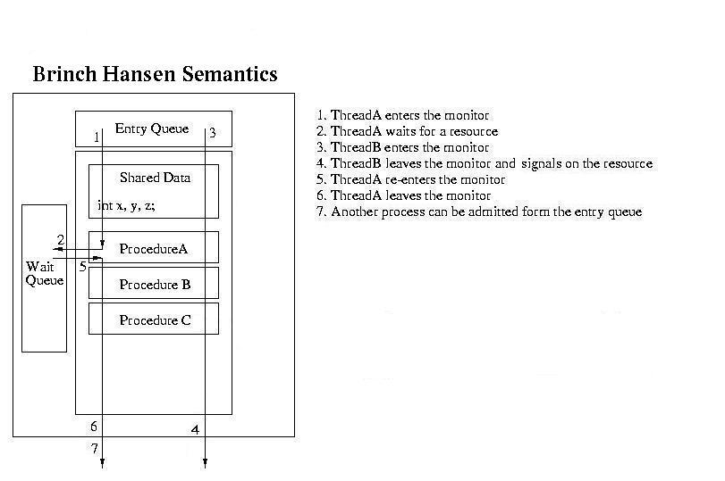
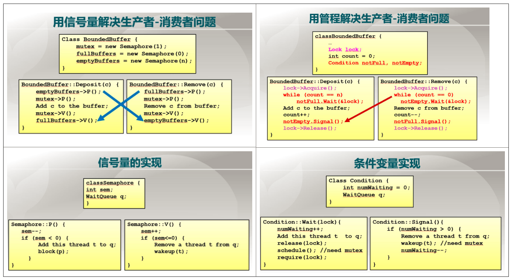

课程内容概述
- 信号量
- 信号量简介
- 信号量使用
- 互斥访问
- 条件同步
- 管程
- 条件变量
- 管程的语义
- 经典问题
- 生产者-消费者问题
- 信号量实现
- 管程实现
- 哲学家就餐问题
- 读者-写者问题
- 生产者-消费者问题
信号量（Semaphore）
信号量是操作系统提供的一种协调共享资源访问的方法。它和软件同步的区别是：
- 软件同步是平等线程间的一种同步协商机制
- 信号量是由操作系统进行管理的，它的地位高于进程（而非平等协商）
信号量由Dijkstra在20世纪60年代提出，目前仍然在OS中被使用。
信号量简介
信号是一种抽象数据类型：
- 由一个整型变量（
sem）和两个原子操作组成 sem：要共享的资源的数目P()操作（Prolaag，尝试减少，请求资源时进行）sem-1- 若
sem<0，进入等待，否则继续运行
V()操作（Verhoog，增加，释放资源时进行）sem+1- 若
sem<=0，则唤醒一个等待进程
信号量的一些特点：
- 信号量可以被认为是被保护的整数变量
- 初始化完成后，只能通过P()和V()操作修改
- 由操作系统保证，PV操作是原子操作
- 可以保证不受应用进程的干扰
- P()操作可能阻塞，但V()操作不会阻塞
- 通常假定信号量是“公平的”
- 线程不会被无限期阻塞在P()操作（实际系统中有一个最长时限的参数，超时之后错误返回）
- 假定信号量等待按先进先出排队（但是在实际系统中公平有所偏差）
下面给出信号量在原理上的一个实现（之所以是原理上的实现，是因为实际实现时要考虑很多问题）：
1 | class Semaphore { |
信号量使用
信号量一般可分为两类：
- 二进制信号量：资源数目为0或1
- 资源信号量：资源数目为任何非负值
下面讨论两个信号量的使用场景：
- 互斥访问：临界区的互斥访问控制
- 条件同步：线程间的事件等待
互斥访问
互斥访问的实现方法非常简单：
1 | // 每类资源设置一个信号量，其初值为1 |
在这种情况下，信号量的使用和锁相同。需要注意以下几点：
- 必须成对使用P()操作和V()操作
- P()操作保证互斥访问临界资源
- V()操作在使用后释放临界资源
- PV操作不能次序颠倒、重复或遗漏
条件同步
举例：线程A执行完X模块之后，线程B才能执行Y模块。
1 | // 设置一个初值为0的信号量 |
管程（Monitor）
管程是一种用于多线程互斥访问共享资源的程序结构
- 采用面向对象方法，简化了线程间的同步控制
- 任一时刻最多只有一个线程执行管程代码
- 正在管程中的线程可临时放弃管程的互斥访问，等待事件出现时恢复（这是最大的特点）
管程的组成：
- 一个锁：控制管程代码的互斥访问
- 入口队列：每次只能有一个线程进入
- 0或多个条件变量：管理共享数据的并发访问
下面需要介绍一下条件变量了。
条件变量（Condition Variable）
条件变量是管程内的等待机制
- 进入管程的线程因资源被占用而进入等待状态
- 每个条件变量表示一种等待原因，对应一个等待队列
Wait()操作：- 将自己阻塞在等待队列中
- 唤醒一个等待者或释放管程的互斥访问（即允许另外一个线程进入管程）
Signal()操作：- 将等待队列中的一个线程唤醒
- 如果等待队列为空，这就相当于是一个空操作
条件变量在原理上的实现和信号量有些类似：
1 | class Condition { |
但是有很多不同的地方，如：
- 对管程的互斥锁的释放和获得
- signal和P语义的不同：PV操作必须是成对的，但signal/wait操作完全不需要保证这一点
- wait和V语义的不同：V操作后线程可能会继续执行，但wait操作后，线程必然进入等待队列并阻塞
- 执行signal/wait时，都默认已经获得了互斥锁
管程的语义
事实上管程一共有三种语义：
- Mesa语义
- Hoare语义
- Hansen语义
以下内容参考了Piazza上的讨论和CMU的课件。
考虑如下情况：线程A在条件变量的等待队列中等待资源，此时线程B在该资源（或者说该条件变量）上执行signal操作。
Mesa语义
- 线程B执行signal之后，不会立刻退出管程，而是执行到lock.release()之后才进入就绪态
- 线程A会被移动到入口等待队列中
- 在wait后被唤醒的进程不一定会被立刻调度，因此需要用
while来检查条件 - 大部分实际实现的管程采用的是这一语义

Hoare语义
- 线程B执行signal之后，迅速唤醒等待中的线程A，自己进入signal队列中（这个队列是此语义特有的）
- 每次有线程退出时，先到signal队列中调度线程，如果signal队列空，才到入口等待队列调度线程
- 实际实现中一般不采用，因为需要多一个队列，代价增大了

Brinch Hanson语义
- 线程B退出的同时才执行signal操作

经典问题
生产者-消费者问题
有界缓冲区的生产者-消费者问题描述：
- 一个或多个生产者在生成数据后放在一个缓冲区里
- 单个消费者从缓冲区取出数据处理
- 任何时候只能有一个生产者或消费者可访问缓冲区
信号量实现
问题分析：
- 任何时刻只能有一个线程操作缓冲区，这是临界区（互斥访问）
- 缓冲区空时，消费者必须等待生产者（条件同步）
- 缓冲区满时，生产者必须等待消费者（条件同步）
用信号量描述每个约束：
- 二进制信号量
mutex：互斥 - 资源信号量
fullBuffers：缓冲区为满（信号量的值表示缓冲区中数据的个数） - 资源信号量
emptyBuffers：缓冲区为空（信号量的值表示缓冲区中空位的个数） - 其中
fullBuffers+emptyBuffers=缓冲区大小
（事实上，OSTEP中讨论了如果只使用一个资源信号量会导致死锁的问题，在此不再赘述了）
下面给出（原理上的）代码实现：
1 | class BoundedBuffer { |
注意P操作之间不能颠倒顺序。V操作不会阻塞，就无所谓了。
管程实现
1 | class BoundedBuffer { |
信号量和管程实现的对比
（以下内容摘自Piazza，修正了一些typo）

如图，信号量中存有int变量sem以及WaitQueue变量q，根据信号量的实现代码（左下角ppt），我们可以得出sem和q的含义：
q代表当前正在等待资源的线程组成的等待队列，若当前资源足够所有进程使用，q为空；sem代表【到目前为止，若所有请求该资源的线程都能够获取该资源，那么资源还剩下多少（这里我们假设资源个数可以为负）】；- 对
sem也可以有另一种理解：当sem非负时，sem代表剩余资源的个数；当sem为负数时，sem的绝对值代表等待队列q的长度。
而当我们使用条件变量解决有限资源问题时，我们通常会在条件变量之外，管程之中加入整型变量count（右上角ppt），来帮助条件变量记录当前剩余多少资源（非负）。查看条件变量的实现代码（右下角ppt），我们可以得出条件变量中整型变量numWaiting以及WaitQueue变量q的含义：
q代表当前正在等待资源的线程组成的等待队列，若当前资源足够所有进程使用，q为空；numWaiting代表等待队列q的长度（非负）。
结合使用信号量以及条件变量解决有限资源问题的实例（左上及右上ppt），以及以上我们对信号量和条件变量的分析，我们可以得出以下结论：
- 在任一状态，信号量中的
q和条件变量中的q完全相同； - 当
sem非负时，含义与管程中的count相同，此时numWaiting为0； - 当
sem为负数时，sem的绝对值等于numWaiting，此时count为0。
在生产者-消费者这个问题实例中：
- 信号量
emptyBuffers与条件变量notFull是匹配的，满足上面3个条件，此时count在代码中以n - count的形式出现； - 信号量
fullBuffers与条件变量notEmpty是匹配的，满足上面3个条件，此时count在代码中以count的形式出现；
综上所述，两种解决方法是完全等价的，至于为什么用管程实现更加安全方便，个人认为老师在视频中并没有解释得很清楚，和老师讨论后得出结论如下：
- 用信号量的时候（左上角ppt），所有信号量都要自己维护，并配对好PV；
- 用管程的时候，我们可以理解为
BoundedBuffer继承了一个管程类，因此操作系统会给BoundedBuffer中每一个方法自动加上锁（即右上角ppt中的lock->Acquire()和lock->Release()函数并不用自己写，是系统加上的），因此更加安全可控，容易查错。
但是个人认为使用条件变量也要根据条件配对好Wait和Signal函数，因此不比使用信号量更容易安全，这个问题见仁见智吧，但如果考试时候问到怎么回答大家懂的~
更新：ucore lab7中实现信号量的sem值非负，这样看来ucore中信号量的sem值和条件变量中的count值应该是完全相等的。
哲学家就餐问题
问题描述：
-
5个哲学家围绕在一张圆桌周围
-
桌子上有5根筷子（或者说叉子……随便啦）
-
哲学家的动作包括思考和进餐
-
进餐时一个哲学家需要自己两边的两根筷子
-
如何保证哲学家们的动作有序进行，既不发生饥饿也不发生死锁？
-
方案1：
- 每个筷子用一个信号量表示，sem=1
- 哲学家先拿第一根筷子，再拿第二根筷子，然后吃，最后放回两根筷子
- 多数情况下这一算法可行；但极端情况下会出现死锁，比如所有哲学家同时拿左边的筷子
-
方案2：
- 除了每根筷子的信号量之外，再加上一个互斥信号量，同时只能有一个哲学家就餐
- 能够保证顺序吃饭，但是浪费了资源和时间
-
方案3：
- 和方案1一样，使用5个信号量表示筷子
- 哲学家根据编号不同，拿取筷子的顺序不同
- 此时没有死锁，且允许两个人同时就餐
信号量实现
这一实现和ucore lab中给出的使用信号量的实现不太一样，而是参考了OSTEP中的做法（更准确地说是Dijkstra本人的做法）。
1 | // Initialization |
读者-写者问题
问题描述：对于一个共享数据，有两类使用者
- 读者：只读取数据，不修改（可以同时读）
- 写者：读取和修改数据（不可以同时写）
- 读写是互斥的
事实上，也需要考虑到，至少有两种可能的策略（而且还会有更多）：
- 读者优先策略：
- 只要有读者正在读状态，后来的读者就能直接进入
- 如果读者不断进入，则写者就处于饥饿
- 写者优先策略
- 只要有写者就绪，写者应尽快执行写操作（后来的读者需要阻塞）
- 如果写者持续不断就绪，则读者就处于饥饿
信号量实现
用信号量描述每个约束：
- 信号量
WriteMutex- 控制读写操作的互斥
- 初始化为1
- 读者计数
Rcount- 正在进行读操作的读者数目
- 初始化为0
- 信号量
CountMutex- 保护对读者计数的互斥修改
- 初始化为1
解决方案：
- 读者的互斥锁只针对于第一个读者，之后不再判断
- 因为Rcount也需要保护，所以外面也加上互斥锁
1 | void Writer() { |
在这一实现中，只要有读者开始阅读，就必须等到全部读者都离开才能进行写操作。即使有写操作在等待，读者仍然先于写者，说明这是一种读者优先策略。
管程实现
管程中包括以下内容：
- 一个互斥锁
- 4个状态变量
- 2个条件变量：可读/可写
从判断条件可以看出，这一实现采用的是写者优先策略。不过其实我还没想明白能否把对AW和WW变量的修改移动到while循环外面。
1 | class Database { |
练习
来自lec18 信号量与管程 在线练习和同步互斥(lec 18) spoc 思考题。
选择题
如果有5个进程共享同一程序段，每次允许3个进程进入该程序段，若用PV操作作为同步机制，则信号量S为-1时表示什么（）
- 有四个进程进入了该程序段
- 有一个进程在等待
- 有三个进程进入了程序段，有一个进程在等待
- 有一个进程进入了该程序段，其余四个进程在等待
一般来说，信号量实现中会满足，它的整数值如果为负数，则负数的绝对值表示等待中的线程数量。当然似乎也有些实现不是这么做的。
2元信号量可以初始化为（）
- 0或1
- 0或-1
- 只能为1
- 任意值
之所以可以初始化为0或1，是因为二元信号量至少有两种不同的使用场景：
- 资源数目为1，如只能互斥访问的代码关键区
- 代码条件等待，这种情况下有可能会先执行V操作，再执行P操作
多个进程对信号量S进行了6次P操作，2次V操作后，现在信号量的值是-3，与信号量S相关的处于阻塞状态的进程有几个（）
- 1个
- 2个
- 3个
- 4个
等待进程的数量就是信号量的值的负数。不过这样可以推导出，请求过信号量资源的进程为6个，得到资源的为2个，现在仍在等待的进程为3个，说明信号量的初值为6-2-3=1。
(2011年全国统考)有两个并发执行的进程P1和P2，共享初值为1的变量x。P1对x加1，P2对x减1。加1和减1操作的指令序列分别如下所示；两个操作完成后，x的值（）。
1 | 加一操作 减一操作 |
- 可能为-1或3
- 只能为1
- 可能为0、1或2
- 可能为-1、0、1、1或2
分成以下几种情况讨论：
- P1和P2的执行完全错开（即加载了不同的x的值）：结果正确，x=1
- P1和P2加载了相同的x的值：结果依赖于P1先写还是P2先写，如果P1先写则x=2，否则x=0
管程的主要特点有（）
- 局部数据变量只能被管程的过程访问
- 一个进程通过调用管程的一个过程进入管程
- 不会出现死锁
- 在任何时候，只能有一个进程在管程中执行
课上好像没有讲这么多管程的特点……
关于管程的叙述正确的是（）
- 管程中的局部数据变量可以被外部直接访问
- 当一个进程在管程中执行时，调用管程的其他进程都不会被阻塞
- 在管程中的signal()与信号量中的signal()操作实现及意义完全相同
- 管程通过使用条件变量提供对同步的支持，这些条件变量包含在管程中，并且只有管程才能访问
管程中的局部变量只能通过管程的过程访问。一个进程在管程中执行时，调用管程的其他过程都会被阻塞。管程中的signal是通过条件变量实现的，而不是信号量，所以意义有微妙的不同。
简答题
什么是信号量？它与软件同步方法的区别在什么地方？
信号量是由操作系统提供的一种协调共享资源访问的方法。信号量是一种抽象数据类，由一个被保护的整形变量（sem）和P()、V()两个原子操作组成，表示系统资源的数量。
区别：
- 软件同步是平等线程间的一种同步协商机制；
- 信号量是由地位高于进程的管理者OS协调的同步机制。
自旋锁为什么无法按先来先服务方式使用资源？
原因：自旋锁是由TS指令实现的临界区申请操作，第一个检测到临界区空闲的申请者而不是第一个开始检测的申请者进入。也就是说，访问顺序是由硬件随机决定的。如果要实现FIFO方式，一般都需要一个队列。
下面是一种P操作的实现伪码。它能按FIFO顺序进行信号量申请吗？
1 | while (s.count == 0) { //没有可用资源时，进入挂起状态； |
参考回答： 它的问题是，不能按FIFO进行信号量申请。
它的一种出错的情况如下：
- 一个线程A调用P()原语时，由于线程B正在使用该信号量而进入阻塞状态；注意，这时value的值为0。
- 线程B放弃信号量的使用，线程A被唤醒而进入就绪状态，但没有立即进入运行状态；注意，这里value为1。
- 在线程A处于就绪状态时，处理机正在执行线程C的代码；线程C这时也正好调用P()原语访问同一个信号量，并得到使用权。注意，这时value又变回0。
- 线程A进入运行状态后，重新检查value的值，条件不成立，又一次进入阻塞状态。
- 至此，线程C比线程A后调用P原语，但线程C比线程A先得到信号量。
虽然参考答案是这么说的，但我觉得这有些牵强：事实上这种错误情况取决于V操作的语义。如果V操作能够保证使唤醒的进程立刻抢占处理机，就不会发生以上问题了。这就类似于管程的Hoare语义和Mesa语义的区别。
Piazza上有一个类似的讨论。事实上，在一般的Mesa语义下，使用if进行检查根本就是不正确的，需要用while。改用while之后，确实能保证正确性，但是FIFO无法保证了。
什么是条件同步？如何使用信号量来实现条件同步？
条件同步是指线程间的事件等待。
条件同步的实现方法：定义初始值为0的信号量，事件触发进程使用V()操作表示事件出现，事件等待进程使用P()操作表示开始等待事件。
也就是说，此处P和V操作的顺序是颠倒的。
什么是生产者-消费者问题？
- 生产者生成数据，并放入缓冲区
- 消费者从缓冲区取出数据，进行处理
- 任何时间只有一个进程访问缓冲区
为什么在生产者-消费者问题中先申请互斥信号量会导致死锁？
如果先申请互斥信号量，后申请资源信号量，则在两种情况下可能会出现循环等待：
- 生产者获得互斥信号量后检查
emptyBuffers资源信号量，发现缓冲区满了，于是进入睡眠状态；此时消费者无法获得互斥信号量，于是无法消耗缓冲区内的资源 - 消费者获得互斥信号量后检查
fullBuffers资源信号量，发现缓冲区空了，于是进入睡眠状态；此时生产者无法获得互斥信号量，于是无法将资源放入缓冲区内
按答案中更抽象的说法就是这样：
- 缓冲区空时，生产者等待缓冲区的互斥访问，以便放入数据；消费者占有缓冲区访问权，等待生产者放入的数据
- 缓冲区满时，生产者占有缓冲区访问权，等待空的缓冲块；消费者等待缓冲区的互斥访问，以便取出数据
为什么互斥信号量的实现比资源信号量的实现要简单？请说明．
信号量中的整形变量的取值不同，互斥信号量的最大取值为1；而资源信号量的最大取值为资源总数。
事实上，互斥信号量和互斥锁是等价的。（如果不考虑sem值和等待进程数量关系的问题）。
管程的组成包括哪几部分？入口队列和条件变量等待队列的作用是什么？
管程是一种并发程序的编程方法，由一个与入口队列对应的锁和若干个与共享数据访问的等待队列对应的条件变量组成，从而实现在任一时刻最多只有一个线程执行管程代码。
管程的组成部分：
- 一个锁：控制管程代码的互斥访问
- 入口队列：每次只能有一个线程进入
- 0或多个条件变量（及其对应的等待队列）：管理共享数据的并发访问
入口的等待队列和锁保证任一时刻最多只有一个线程执行管程代码；每个条件变量等待队列表示一种等待的资源。
管程与临界区有什么异同？
- 相同点：在任一时刻最多只有一个线程执行管程代码或临界区代码
- 不同点：正在管程中的线程可临时放弃管程的互斥访问（进入条件变量的等待队列），等待事件出现时恢复；而临界区不支持临时退出
（所以其实在管程的概念里面我们已经不谈临界区了？）
为什么用管程实现的生产者-消费者问题中，可以在进入管程后才判断缓冲区的状态？
因为管程允许临时放弃管程的互斥访问，而信号量并不支持临时放弃互斥访问权。在具体实现上，在管程内部的条件变量上进行等待时，会将管程的锁作为wait()操作的参数传递过去，此操作会同时放弃锁（返回时又会重新获得锁），因此不会导致死锁。
请描述管程条件变量的三种释放处理方式的区别是什么？条件判断中的while和if是如何影响释放处理中的顺序的？
- Mesa管程：占用管程的当前进程可在任何时刻释放占用资源并唤醒相应的等待进程，当前进程继续执行，被唤醒进程放回入口等待队列队首等待当前进程释放管程访问权
- Hoare管程：占用管程的当前进程可在任何时刻释放占用资源并唤醒相应的等待进程，当前进程进入唤醒队列等待，被唤醒进程继续执行直到释放管程访问权；管程空闲时，优先查看唤醒队列中的等待进程，唤醒队列中没有等待进程时再查看入口队列
- Hansen管程：占用管程的当前进程只在退出管程时释放占用资源并唤醒相应的等待进程，被唤醒进程继续执行直到释放管程访问权
条件判断中while和if对释放处理中的执行顺序影响：
- 在Hansen和Mesa管程中，由于条件变量释放操作signal时并没有立即放弃管程访问权，资源的可用状态可能变化，需使用while()进行重新检查；
- 在Hoare管程中，由于条件变量释放操作signal同时表示立即放弃管程访问权，资源的可用状态保持不变，可使用if判断，不需要再次检查。
Ref: https://piazza.com/class/i5j09fnsl7k5x0?cid=894
Ref: https://www.andrew.cmu.edu/course/15-440-kesden/applications/ln/lecture6.html
（不过在上述Piazza帖子中也有人提出了这样的问题：Hansen管程似乎是直接把访问权转移给了等待进程，这样还需要使用if来判断吗？）
哲学家就餐问题的方案2和方案3的性能有什么区别？
- 方案2中，最多只有一个哲学家在吃饭
- 方案3中，最多可以有两个哲学家在同时吃饭
在读者-写者问题的读者优先和写者优先在行为上有什么不同？
- 读者优先策略：
- 只要有读者正在读状态，后来的读者就能直接进入
- 如果读者不断进入，则写者就处于饥饿
- 写者优先策略
- 只要有写者就绪，写者应尽快执行写操作（后来的读者需要阻塞）
- 如果写者持续不断就绪，则读者就处于饥饿
在读者-写者问题的读者优先实现中优先于读者到达的写者在什么地方等待？
互斥信号WriteMutex。因为这是控制读写互斥访问的锁。
实践题
请用管程with条件变量来实现信号量。
1 | class Semaphore { |
考虑到可能是Mesa语义的管程，因此进行了while检查。参考了这个Piazza帖子，我认为上述实现可以满足：
- 在任一状态，条件变量的等待队列与信号量的等待队列完全相同
- 当
count != 0时，其含义与信号量中的sem相同，此时条件变量的numWaiting = 0 - 当
count = 0时，条件变量的numWaiting等于信号量的sem的相反数（实现保证了count不会为负数）
请用信号量来实现管程with条件变量。
这个就有一定的难度了。当然，管程的核心是条件变量，其实实现条件变量就可以了。以下内容参考了Implementing Condition Variables with Semaphores这篇文章。
首先用信号量实现一个锁，这是非常容易的。
1 | class Lock { |
下面给出一种非常简单但是也非常错误的实现。该实现的显而易见的问题是，wait操作中对锁的释放和当前线程的睡眠不是原子的。然后好像会出现一个叫做“wake-up waiting race”的问题，不过此处好像并不会发生错误。以及，即使在没有线程正在等待时，signal操作也会使得信号量的值增加，这样，下一个等待进程就不会阻塞了，这是不正确的。
1 | class CV { |
于是我们用信号量x作为互斥锁来保护wait操作，同时统计等待进程的个数。但这个实现也有两个问题：
- 由于s信号量的资源个数为1，因此最多只有一个调用wait的进程能够从s.P中返回，其余的都阻塞在s.P上；解决方法是把s的资源个数调到无限大
- 没有保证先进先出的语义
1 | class CV { |
下一种实现中，加入了信号量h，它会使发出信号的线程在等待线程离开等待队列之前也阻塞。这个实现是正确的，但是似乎太麻烦了。论文最后表示，他们决定还是在OS中用硬件指令来实现条件变量。
1 | class CV { |
请评价如下的实现(用信号量来实现管程with条件变量)是否合理？简要说明理由。
1 | Implementing a Monitor |
每人使用C++或python语言用信号量和条件变量两种手段分别实现40个同步互斥问题中的一题。请先理解python threading 机制的介绍和实例
建议参考梁锡豪同学的输出信息显示方式，这种方式的可读性很好。
建议重视测试用例的设计，以检查自己的实现是否有错。
设计某个方法，能够动态检查出对于两个或多个进程的同步互斥问题执行中，没有互斥问题，能够同步等，以说明实现的正确性。
管程和信号量在解决同步互斥问题上是否等价？请证明/说明你的结论．
Piazza上有两个非常优秀的讨论：
- https://piazza.com/class/i5j09fnsl7k5x0?cid=845：阐述了信号量和条件变量在具体实现和操作层面的异同
- https://piazza.com/class/i5j09fnsl7k5x0?cid=839：对信号量和条件变量抽象的理解
简单来说，就是：信号量可以实现管程，管程可以实现信号量，所以在这个层面，二者等价。